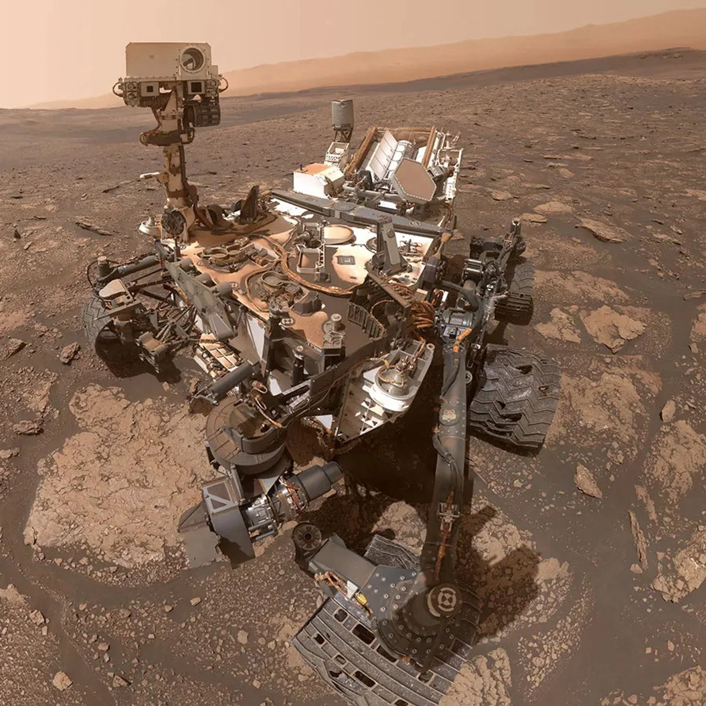

For more than two decades, NASA's Mars rovers have crawled across the surface of the Red Planet, drilling into ancient rock, sniffing the atmosphere, and transmitting billions of data points back to Earth. These robotic ambassadors have transformed Mars from a distant dot in the night sky into a place we know — a world with a complex past, dynamic geology, and perhaps the conditions that once supported life.
The Mars Rover Program
NASA's Mars Exploration Rover program began as a bold response to a fundamental question: did life ever exist beyond Earth? To answer it, scientists needed to get up close — not with telescopes, but with wheels, cameras, and chemistry labs on the ground.
Since Sojourner's historic first roll in 1997, NASA has landed four rovers on Mars. Each mission built on the lessons of the last, growing in size, capability, and ambition. What started as a 30-day technology demonstration has evolved into an ongoing search for signs of ancient microbial life — with samples now waiting on the Martian surface for a future return mission.
These rovers are not just machines. They are extensions of human curiosity, engineered to go where we cannot — yet.

Spirit & Opportunity
Dates Active: 2004–2010 (Spirit) | 2004–2018 (Opportunity)
Twin rovers launched in 2003, designed for 90‑day missions. Opportunity kept going for nearly 15 years.

Curiosity
Dates Active: 2012–Present
Curiosity is a rolling chemistry lab exploring Gale Crater.

Perseverance
Dates Active: 2021–Present
Perseverance searches for biosignatures in Jezero Crater and carried the Ingenuity helicopter.
Why Do We Explore Mars?
Mars is the most Earth-like planet in our solar system, and its geological record stretches back billions of years. Unlike Earth, where plate tectonics and erosion constantly reshape the surface, Mars has preserved ancient terrain largely intact. If life ever arose there, evidence may still exist in the rocks.
Mars also holds practical importance for humanity's future. Understanding its atmosphere, radiation environment, and resources is essential groundwork for eventual human missions. Every discovery made by a rover brings that future a step closer.